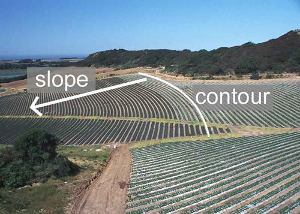

Contour Farming
What is it?
Contour farming is coordinating and planning crop planting and harvesting techniques based on the contour and slope of the land to reduce soil eroision.
 ( photo from the Plant and Soil Sciences eLibrary; University of Nebraska - Lincoln)
Conservation Benefits
- Reduces chemical and nutrient runoff from the property
- Reduces sediment erosion from the land into streams
What does it include?
Property contour and topography evaluation and crop planning is critical for contour farming. Farmers integrate property contour information in the development of a planting and harvesting stragegy. Countour farming will also consider natural drainage patterns for the property which will reduce or eliminate the amount of gullies formed after storm events, reduce the amount of soil erosion, and reduce the amount of chemical and nutrient runoff. Crops planted along the land's contour are more efficient in retaining irrigation and rainwater and will more effectively retain fertilizer.
Contour Farming Links
- Contour farming (TWDB, TSSWCB, and Texas Water Conservation Impementation Task Force)
- Contour farming (Kentucky NRCS)
- Contour farming (NRCS)
Contour Farming Bibliography
- Van Doren et al. 1950. Effect of contour farming on soil loss and runoff. Soil Science Society of America Journal 1950: 413.
- Garrity. 2000. Contour farming based on natural vegetative strips: expanding the scope for increased food crop production on sloping lands in Asia. Environmental, Development and Sustainability 1: 323-336.
- Prato and Wu. 1991. Erosion, sediment, and economic effects of conservation complience in an agricultural watershed. Journal of Soil and Water Conservation 46: 211-214.